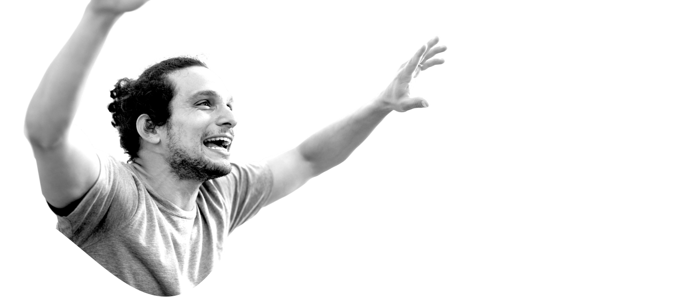
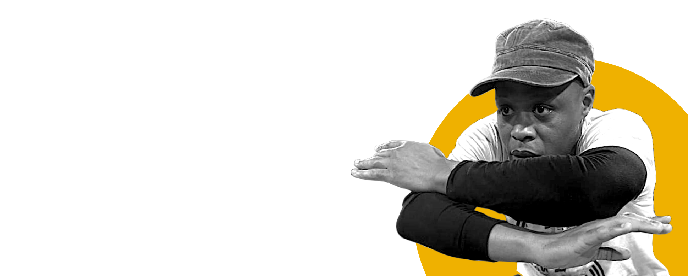
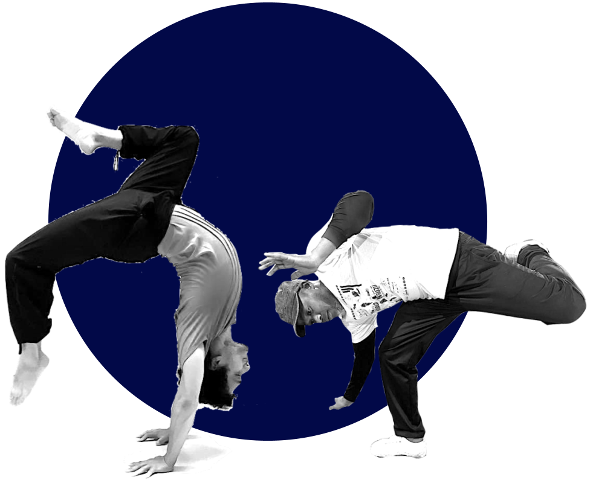
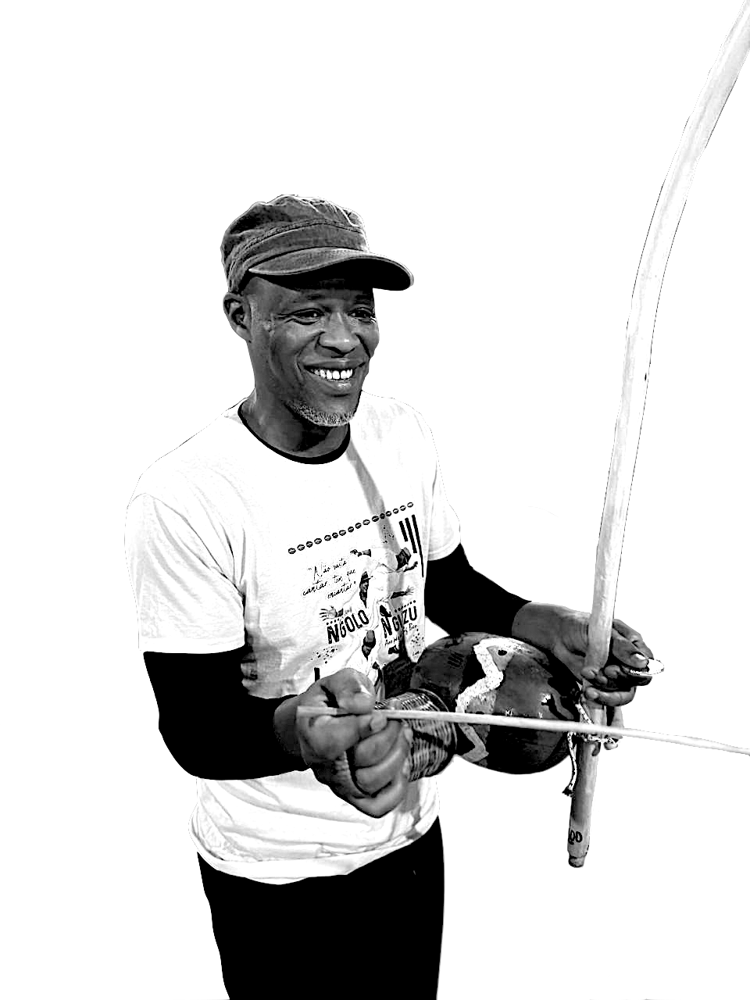
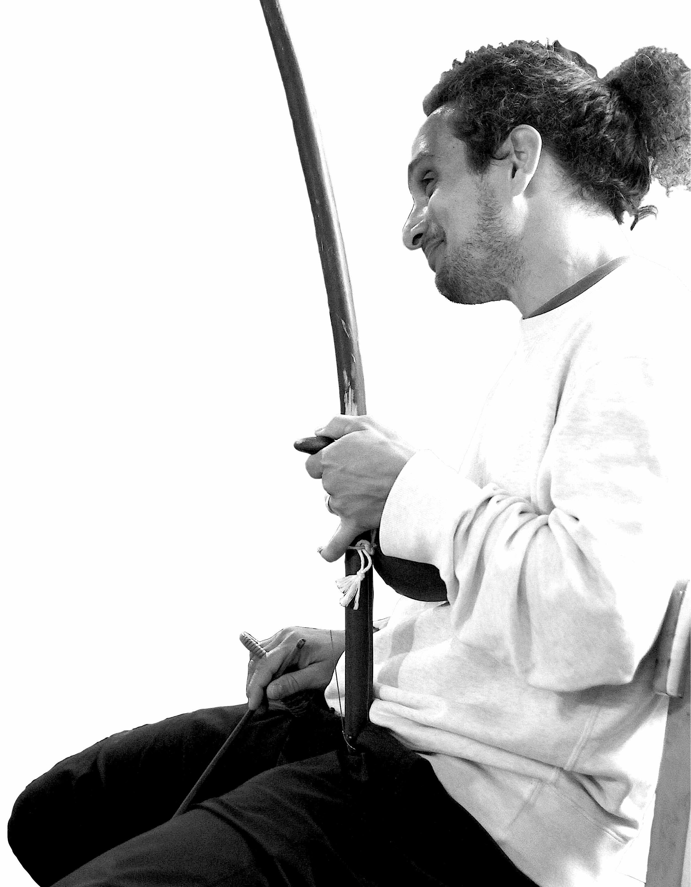

“De Dentro Para Fora”
Über das Event
Bei unserem letzten Event stand die Arbeit unseres Lehrers, Contramestre Baris Yazar, im Fokus. 2027 kehrt Baris zurück, um mehr von seinem Wissen mit uns zu teilen. Wir freuen uns sehr, dieses Jahr Contramestre Kimbundo als unseren zweiten Gast begrüßen zu dürfen.
Baris und Kimbundo lernten sich 2006 in London kennen und schlossen schnell eine enge Freundschaft. Sie wurden Trainingspartner und machten gemeinsam ihre ersten Schritte in der Capoeira. Jahre später kehrte Kimbundo in seine Heimat, Angola, zurück, und die beiden schlugen jeweils ihren eigenen Weg in der Capoeira ein. Bis heute jedoch inspirieren sich die beiden gegenseitig und lernen von einnander. Es ist uns eine Ehre, die zwei langjährigen Freunde als unsere Lehrer und Mentoren für dieses Wochenende der Vivência wiederzuvereinen.
Unser Thema lautet „Capoeira de dentro para fora“ (Capoeira von innen heraus). In ihren Workshops führen uns Baris und Kimbundo in das „innere Spiel“ des Fühlens, der Wahrnehmung und des Verbundenseins. Sie zeigen uns, wie dies mit dem „äußeren Spiel“ – dem der Capoeira-Roda und der größeren Roda des Lebens – zusammenhängt.
Bitte beachte, dass das Event auf Englisch stattfindet. Wir bemühen uns jedoch, bei Bedarf Übersetzungen ins Deutsche und/oder Portugiesische anzubieten.
Die Lehrer
Contramestre Baris Yazar ist Gründer von Bambubodies, einer Dachorganisation, die sich der Ausbildung, Förderung und Praxis verschiedener Bewegungskünste und -disziplinen widmet. Er ist bekannt für sein tiefes Körperverständnis, das auf drei Jahrzehnten Erfahrung in der Capoeira, Yoga, Tanz und manueller Therapie basiert. Über ein Jahrzehnt lehrte er Urban Dance an der University of East London. Seine Methode konzentriert sich auf „physical literacy“ (körperliche Grundkompetenz) und Embodiment (Verkörperung). Sie vermittelt Kernprinzipien des körperlichen Dialogs, mit dem Ziel, ein geerdetes und verbundenes Capoeira-Spiel zu fördern. Mehr
Contramestre Kimbundo (Lúcio Bento Ngungi) leitet die Grupo de Capoeira Angola Okupandula in Luanda, Angola, unter der Supervision von Mestre Moraes. Diese Verbindung entstand 2015, als Kimbundo als Teil seines Studiums nach Brasilien reiste. Er erinnert sich: „Ich kann den Moment nicht beschreiben, als ich die Academia der GCAP (Grupo de Capoeira Angola Pelourinho) betrat, die Berimbaus hörte und eine Energie spürte, die mich tief berührte. Heute fühle ich mich geehrt und stolz, Pedro Moraes Trindade als meinen Mestre und Mentor zu haben, denn unsere Beziehung ist eine der Ancestralidade (Ahnenschaft).“ Mehr

Ehrengäste
Wir freuen uns sehr, dass einge andere herausragende Capoeiristas und Lehrer*innen zu uns stoßen werden, darunter:
- Contramestra Mel (Berlin)
- Professor Daniel (Graz)
- Professor Lagartixa (Stockholm)
- Professor Popô (Frankfurt am Main)
- Instrutora Mena Brisa (Bristol)
- Instrutor Ramin (London)
- Instrutor Shaya (London)
- Instrutor Xico (Graz)
...weitere folgen in Kürze
Ort & Zeitplan
Das Event findet im
Dock 11 Eden
(Studio 300) statt:
Breite Str. 43, 13187 Berlin, Deutschland
Freitag, 5. Feb: 17–20 Uhr + Abendessen
Samstag, 6. Feb: 10–20 Uhr + Abendessen
Sonntag, 7. Feb: 10–20 Uhr + Abendessen
Es wird Bewegungs- und Musikworkshops geben, sowie Bate-Papo (Gesprächsrunden) und natürlich viel Roda! Samstag und Sonntag gibt es eine Mittagspause. Ein detaillierter Zeitplan wird kurz vor der Veranstaltung veröffentlicht.
Preise
Ganzes Wochenende
€130 (Frühbucher, bis 1. Dezember)
€150 (Vollpreis)
€75 (Solidaritätspreis)
Freitag + ENTWEDER Samstag ODER Sonntag
€90 (Vollpreis)
€45 (Solidaritätspreis)
Mahlzeiten sind nicht im Eventpreis enthalten.

